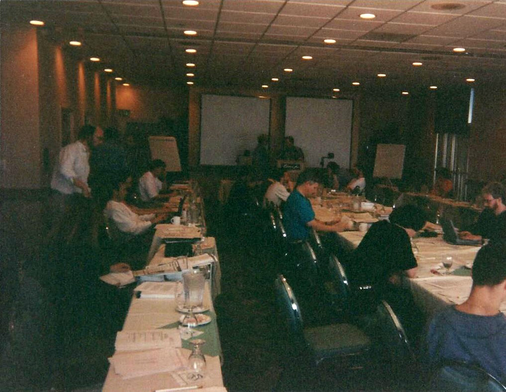

Stroustrup is best known for his work on C++.
In 1979, he began developing C++ (initially called "C with Classes").
In his own words, he "invented C++, wrote its early definitions, and produced
its first implementation [...]
chose and formulated the design criteria for C++, designed all
its
major facilities, and was responsible for the processing of extension proposals in the C++ standards
committee."
C++ was made generally available in 1985.
For non-commercial use, the source code of the compiler and the foundation libraries was the cost of
shipping (US$75);
this was before everyone had Internet access.
Stroustrup also published a textbook for the
language in
1985,
The C++ Programming Language.
The FitnessGram™ Pacer Test is a multistage aerobic capacity test that progressively gets more
difficult
as
it continues.
The 20 meter pacer test will begin in 30 seconds. Line up at the start.
The running speed starts slowly, but gets faster each minute after you hear this signal.
[owo bot is dead] A single lap should be completed each time you hear this sound.
[owo bot is dead] Remember to run in a straight line, and run as long as possible.
The second time you fail to complete a lap before the sound, your test is over.
The test will begin on the word start. On your mark, get ready, start.
Союз нерушимый республик свободных
Сплотила навеки Великая Русь.
Да здравствует созданный волей народов
Единый, могучий Советский Союз!
<<<<<<< HEAD
Славься, Отечество наше свободное,
Дружбы, народов надежный оплот!
Знамя советское, знамя народное
Пусть от победы, к победе ведет!
Сквозь грозы сияло нам солнце свободы,
И Ленин великий нам путь озарил.
Нас вырастил Сталин - на верность народу
На труд и на подвиги нас вдохновил.
Славься, Отечество чаше свободное,
Счастья народов надежный оплот!
Знамя советское, знамя народное
Пусть от победы к победе ведет!
Stroustrup is best known for his work on C++. In 1979, he began developing C++ (initially called "C with Classes"). In his own words, he "invented C++, wrote its early definitions, and produced its first implementation [...] chose and formulated the design criteria for C++, designed all its major facilities, and was responsible for the processing of extension proposals in the C++ standards committee." C++ was made generally available in 1985. For non-commercial use, the source code of the compiler and the foundation libraries was the cost of shipping (US$75); this was before everyone had Internet access. Stroustrup also published a textbook for the language in 1985, The C++ Programming Language.
>>>>>>> dde30b74c2061606957da0a91a15e8234e2ccb93